Perceptual Inference: From Cones to Perception
Part 1 showed: Cone signals are ambiguous — many scenes produce the same response.
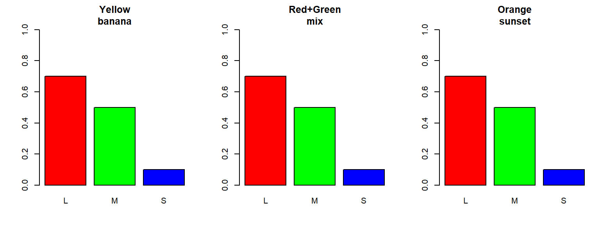
Same L, M, S response! Which scene is it?
“The brain decodes the sensory representation to produce perceptions that are a likely guess about the state of the external world. Perception is an unconscious inference.” — Helmholtz
x = scene (what we want to know)
y = cone excitations (what we measure)
\[p(\mathbf{x}|\mathbf{y}) = K \cdot p(\mathbf{y}|\mathbf{x}) \cdot p(\mathbf{x})\]
| Term | Name | Meaning |
|---|---|---|
| p(y|x) | Likelihood | “If scene is x, how likely is cone response y?” |
| p(x) | Prior | “How common is scene x in the world?” |
| p(x|y) | Posterior | “Given cones say y, what scene x is most likely?” |
Key insight: The prior resolves ambiguity — it tells us which of the many possible scenes is most plausible!
Simplify to understand: Imagine a scene with only 2 pixels
Each row = one possible scene (x₁, x₂)
Prior belief: Neighboring pixels tend to be similar (natural images are smooth)
We model this with a 2D Gaussian with positive correlation:
library(mvtnorm) # for multivariate normal
# Mean: expect both pixels around 0.5 (middle gray)
mu_prior <- c(0.5, 0.5)
# Covariance matrix: pixels are correlated!
sigma_prior <- matrix(c(0.025, 0.020, # variance of x1, covariance
0.020, 0.025), # covariance, variance of x2
nrow = 2, ncol = 2)
sigma_prior [,1] [,2]
[1,] 0.025 0.020
[2,] 0.020 0.025Positive covariance (0.020) means: if x₁ is high, x₂ is probably high too!
We Choose These Parameters!
The prior parameters (μ, Σ) encode our beliefs about natural scenes:
The formula: For a 2D Gaussian, the probability density at point x = (x₁, x₂) is:
\[p(\mathbf{x}) = \frac{1}{2\pi|\Sigma|^{1/2}} \exp\left(-\frac{1}{2}(\mathbf{x}-\boldsymbol{\mu})^T \Sigma^{-1} (\mathbf{x}-\boldsymbol{\mu})\right)\]
Our parameters:
| Parameter | Value | Meaning |
|---|---|---|
| μ (mean) | (0.5, 0.5) | Most likely pixel values = middle gray |
| σ₁² (variance of x₁) | 0.025 | How much pixel 1 varies |
| σ₂² (variance of x₂) | 0.025 | How much pixel 2 varies |
| σ₁₂ (covariance) | 0.020 | How pixels vary together |
The covariance matrix Σ:
\[\Sigma = \begin{pmatrix} \sigma_1^2 & \sigma_{12} \\ \sigma_{12} & \sigma_2^2 \end{pmatrix} = \begin{pmatrix} 0.025 & 0.020 \\ 0.020 & 0.025 \end{pmatrix}\]
Positive σ₁₂ → pixels are positively correlated → the Gaussian is stretched along the diagonal!
dmvnorm() Function in RPackage: mvtnorm (multivariate normal)
| Argument | Type | Description |
|---|---|---|
x |
vector or matrix | Point(s) to evaluate, e.g., c(0.3, 0.7) |
mean |
vector | Mean vector μ, e.g., c(0.5, 0.5) |
sigma |
matrix | Covariance matrix Σ (2×2 for 2D) |
Example:
[1] 10.61033[1] 1.34371e-13The smooth scene (0.5, 0.5) is much more likely than the jagged scene (0.9, 0.1)!
# dmvnorm() = density of multivariate normal
# For each (x1, x2) pair, how likely is that scene?
# Calculate prior probability for EACH of the 3600 grid points
prior_values <- numeric(nrow(grid)) # empty vector
for (i in 1:nrow(grid)) {
point <- c(grid$x1[i], grid$x2[i]) # one (x1, x2) pair
prior_values[i] <- dmvnorm(point, mean = mu_prior, sigma = sigma_prior)
}
# Reshape into 60×60 matrix for plotting
prior <- matrix(prior_values, nrow = length(x1), ncol = length(x2))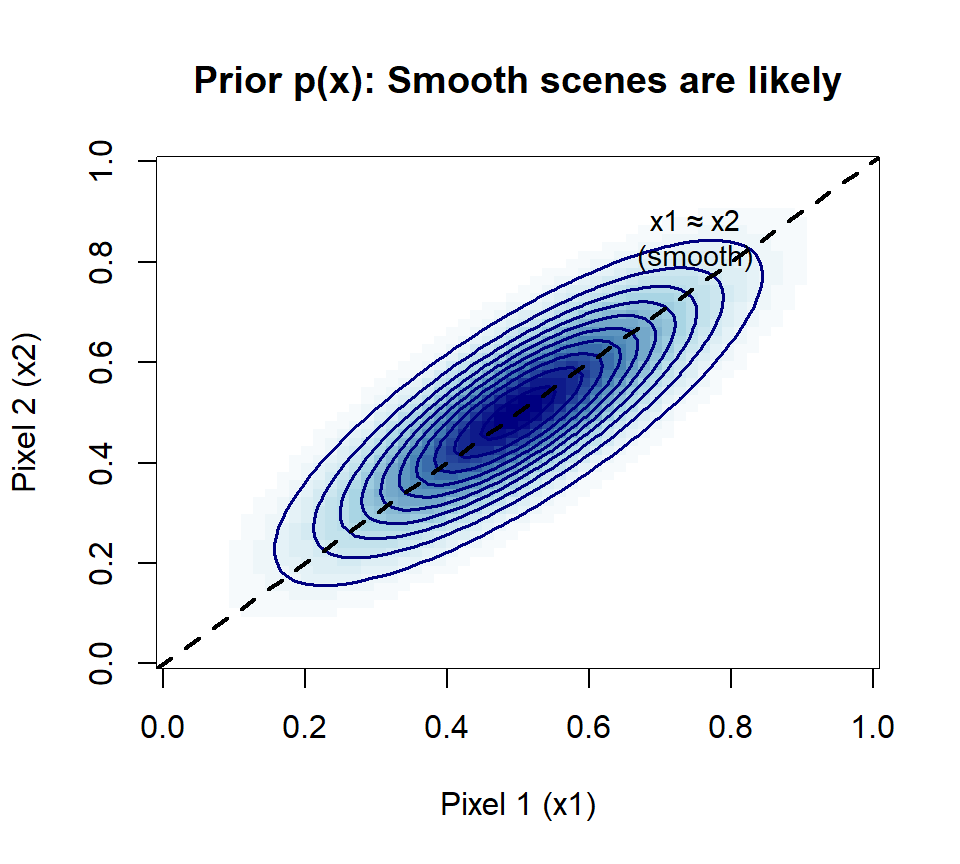
The cone measures a weighted sum of the two pixels:
\[y = 0.5 \cdot x_1 + 0.5 \cdot x_2 + \text{noise}\]
Suppose the cone measured y = 0.25. Which scenes could produce this?
# Any (x1, x2) where 0.5*x1 + 0.5*x2 ≈ 0.25 is consistent!
# That means: x1 + x2 ≈ 0.5
# Likelihood = probability of observing y=0.25 given scene (x1, x2)
y_observed <- 0.25
noise_sd <- 0.025 # measurement noise
likelihood_values <- numeric(nrow(grid))
for (i in 1:nrow(grid)) {
# What would cone measure for this scene?
y_predicted <- 0.5 * grid$x1[i] + 0.5 * grid$x2[i]
# How likely is y_observed given y_predicted?
likelihood_values[i] <- dnorm(y_observed, mean = y_predicted, sd = noise_sd)
}
likelihood <- matrix(likelihood_values, nrow = length(x1), ncol = length(x2))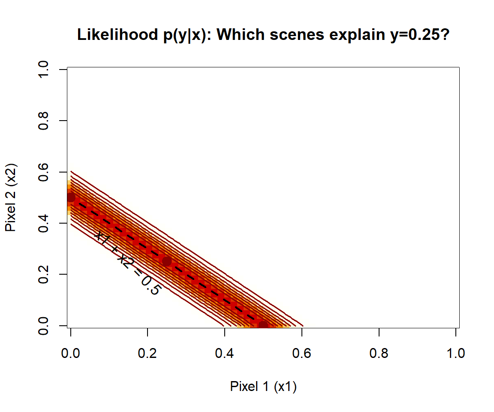
The ridge: All scenes where x₁ + x₂ = 0.5 are equally likely given the cone response!
Bayes’ rule: Multiply prior and likelihood, then normalize
What happens geometrically?
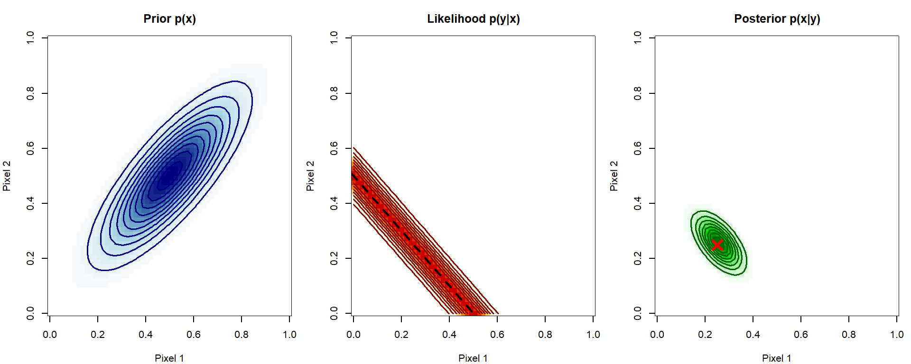
| Prior | Likelihood | Posterior | |
|---|---|---|---|
| Shape | Diagonal blob | Ridge (x₁+x₂=0.5) | Narrow peak |
| Says | “Pixels are similar” | “Many scenes fit y” | “Best guess: (0.25, 0.25)” |
The prior p(x) captures statistical regularities of natural scenes.
But where do these come from?
Two sources:
Let’s look at each…
Observation: In natural images, nearby pixels tend to have similar intensities.
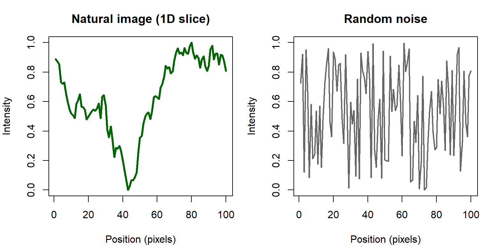
Left: Smooth transitions — this is what real scenes look like!
Right: Random jumps — extremely unlikely in nature.
→ The prior assigns high probability to smooth images, low probability to noisy ones.
Observation: Natural surface reflectances are spectrally smooth.
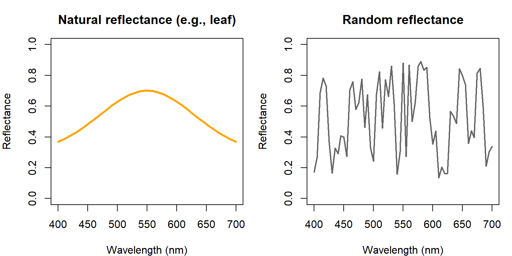
Left: Smooth curve — typical of natural materials (leaves, skin, wood).
Right: Jagged spectrum — almost never occurs in nature.
→ The prior says: “Reflectances that jump wildly between wavelengths are unlikely.”
Beyond statistics, we have learned knowledge about the world:
| Prior belief | Why it helps |
|---|---|
| Bananas are usually yellow | Resolve color ambiguity under different lighting |
| Light comes from above | Interpret shading as 3D shape |
| Surfaces are smooth, not spiky | Fill in missing texture information |
| Objects are solid, continuous | Group fragments into whole objects |
The Brain as a Bayesian Machine
The brain learns these priors through experience — millions of visual scenes over a lifetime.
When cone signals are ambiguous, the prior “votes” for the most plausible interpretation!
We’ve built a forward model: Scene → Optics → Cones → Signals
Now the big question:
How well COULD a visual system perform, given only the information in cone signals?
This is important because:
An ideal observer is a hypothetical system that:
In other words: the best possible performance given the information available.
Think of it as…
The ideal observer is like a “perfect brain” attached to real eyes. It extracts ALL the information that the cones provide — nothing more, nothing less.
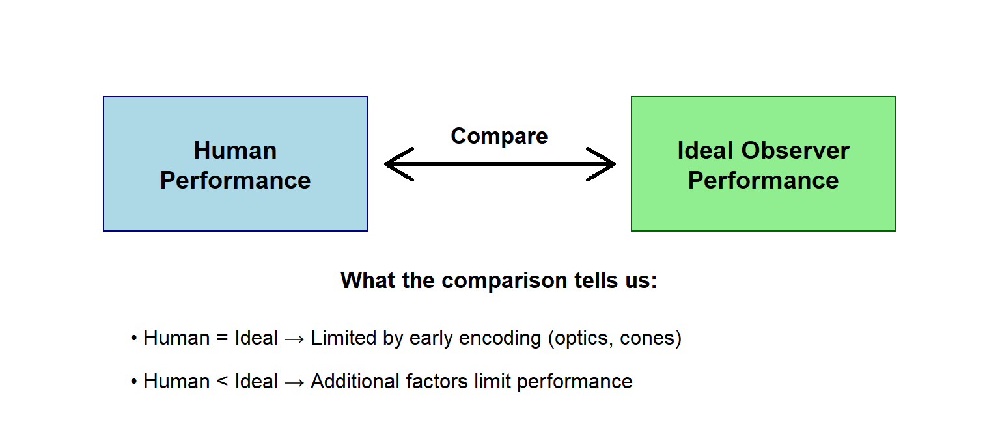
The gap between human and ideal tells us where to look for limitations!
Task: Detect a faint striped pattern (grating) on a gray background.
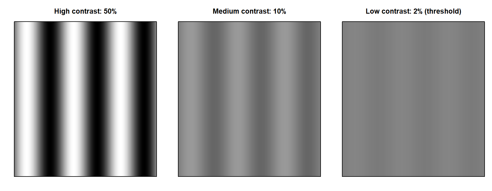
Can you see the stripes in all three? The rightmost is near human detection threshold!
Threshold = minimum contrast to discriminate grating from uniform field (e.g., 80% correct)
Sensitivity = 1 / threshold (higher = better)
Spatial frequency = how many stripe cycles fit in one degree of visual angle.
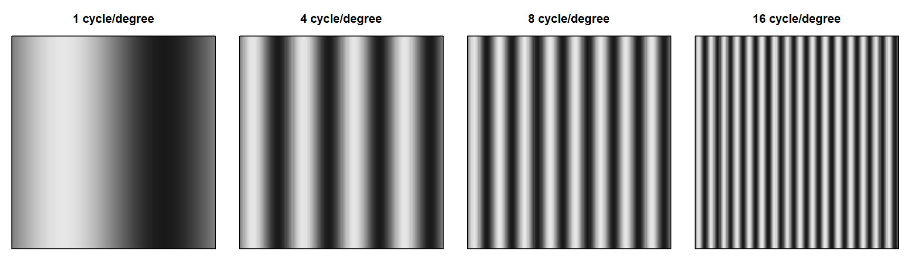
| Spatial frequency | Stripe width | What it represents |
|---|---|---|
| Low (1-2 c/deg) | Wide stripes | Coarse details, large objects |
| Medium (4-8 c/deg) | Medium stripes | Typical object features |
| High (16-32 c/deg) | Narrow stripes | Fine details, textures |
Question: Are we equally sensitive to all spatial frequencies?
We measure threshold (minimum detectable contrast) at each spatial frequency.
Then compute sensitivity = 1 / threshold.
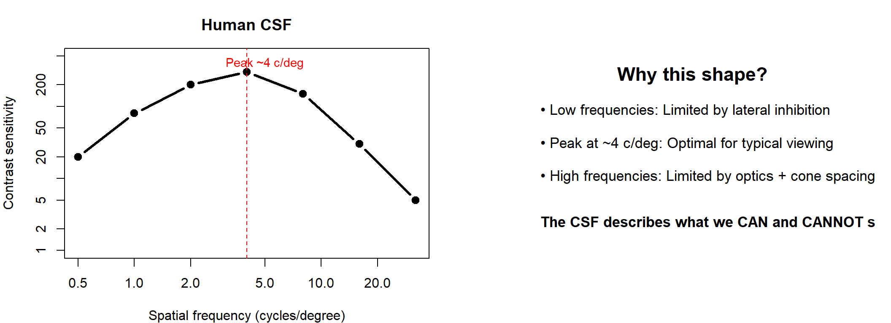
Now compare human CSF to the ideal observer (optimal Bayesian with perfect knowledge):
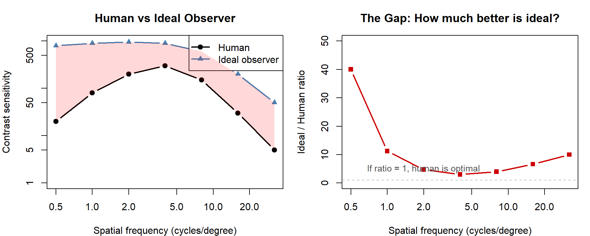
Key finding: Ideal observer is much more sensitive than humans!
→ Something beyond optics and cones is limiting human performance.
Note
Values shown are schematic/illustrative. See Banks, Geisler, & Bennett (1987) and Figure 1.10B in the chapter for actual data.
The ideal observer is too good — much more sensitive than humans.
Why the gap?
The ideal observer has “perfect knowledge”:
But real humans:
→ We need a more realistic model!
A computational observer relaxes the ideal observer assumptions one at a time:
| Factor | Ideal observer | Computational observer |
|---|---|---|
| Optics | Simplified PSF | Realistic wavefront aberrations |
| Decision rule | Optimal (known templates) | Learned from noisy examples |
| Eye position | Fixed | Fixational drift during stimulus |
| Cone response | Excitations only | Full photocurrent model with gain control |
Key idea: Each added realism brings the model closer to human performance.
If we can match human CSF with realistic factors → we understand what limits vision!
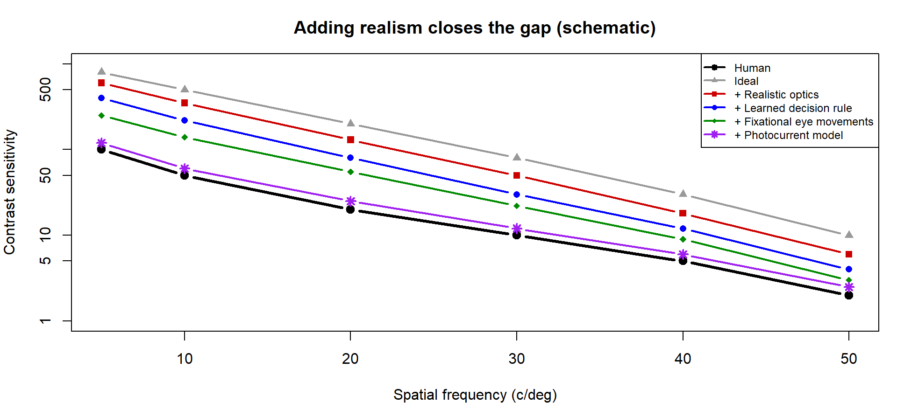
| Factor added | What it models | Effect on sensitivity |
|---|---|---|
| Realistic optics | Wavefront aberrations (Thibos et al., 2002) | Small reduction |
| Learned decision rule | Template matching trained on noisy examples | Moderate reduction |
| Fixational eye movements | Drift during stimulus — adds blur | Further reduction |
| Photocurrent model | Gain control + additional noise in cones | Brings close to human |
Tip
By the time we account for realistic optics, learned decisions, eye movements, and photocurrent dynamics, the computational observer matches human performance at high spatial frequencies!
This tells us these factors — not mysterious “neural inefficiency” — explain the gap.
Beyond threshold tasks, can we use Bayesian inference to reconstruct what we’re looking at?
What we have: Cone excitations y (noisy measurements)
What we want: The original image x (pixel values)
The forward model:
\[\bar{\mathbf{y}} = \mathbf{R}\mathbf{x}\]
| Symbol | Meaning |
|---|---|
| x | Image pixel values (what we want to find) |
| R | Matrix that maps pixels → cone excitations |
| ȳ | Mean cone excitations |
| y | Actual cone excitations (ȳ + Poisson noise) |
The matrix R encodes optics, cone positions, and spectral sensitivities.
Given: Noisy cone excitations y
Find: Most likely image x
Use Bayes’ rule:
\[p(\mathbf{x}|\mathbf{y}) \propto p(\mathbf{y}|\mathbf{x}) \cdot p(\mathbf{x})\]
| Component | What we use |
|---|---|
| Likelihood p(y|x) | Poisson noise model: y ~ Poisson(Rx) |
| Prior p(x) | Gaussian prior encoding natural image statistics |
| Estimate x̂ | Find x that maximizes the posterior |
Key insight: The prior “fills in” information lost by sparse cone sampling!
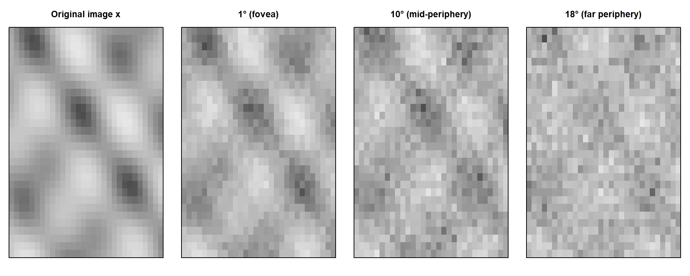
| Eccentricity | Cone density | PSF blur | Reconstruction quality |
|---|---|---|---|
| 1° (fovea) | High | Sharp | Excellent |
| 10° | Medium | Medium | Good (prior helps) |
| 18° | Low | Blurry | Recognizable (prior helps more!) |
The problem: Fewer cones + blurrier optics → less information
The solution: The prior compensates!
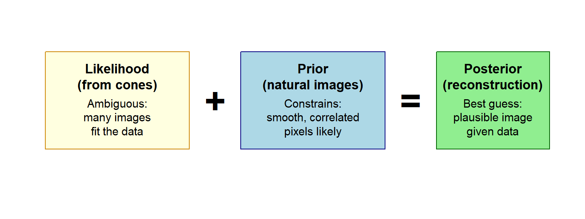
Even with massive information loss, the brain can “guess” reasonable images because unlikely scenes (random noise, jagged edges) are downweighted by the prior!
The prior compensates for information loss:
| Eccentricity | Cone density | PSF | Reconstruction |
|---|---|---|---|
| 1° (fovea) | High | Sharp | Excellent |
| 10° | Medium | Medium | Good (prior helps) |
| 18° | Low | Blurry | Recognizable (prior helps more!) |
Key insight: Even with massive information loss in periphery, the brain can still “guess” reasonable images because:
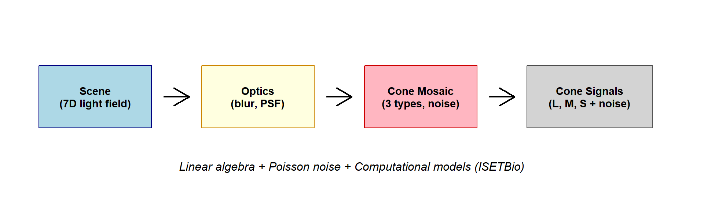
Key math: n = C · e (matrix multiplication), Poisson noise, convolution
Key insight: Massive information loss at every stage!
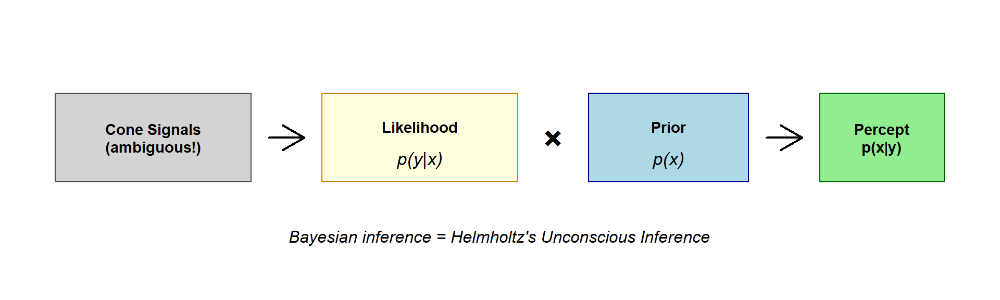
Key math: p(x|y) ∝ p(y|x) · p(x)
Key insight: Prior knowledge resolves ambiguity!
1. Vision is a forward + inverse problem:
2. Information is lost at every stage:
3. The brain solves ambiguity using priors:
4. Computational models are essential:
“When you come to a fork in the road, take it.” — Yogi Berra
Multiple approaches to vision science:
| Approach | Focus |
|---|---|
| Mathematical | Forward models, linear algebra |
| Behavioral | Thresholds, matching, scaling |
| Neurobiological | Anatomy, physiology |
| Engineering | Build systems that see |
All valid. All complementary. The field is large enough for everyone!